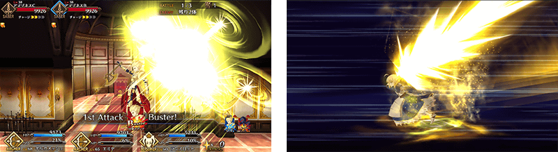
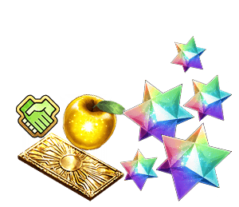
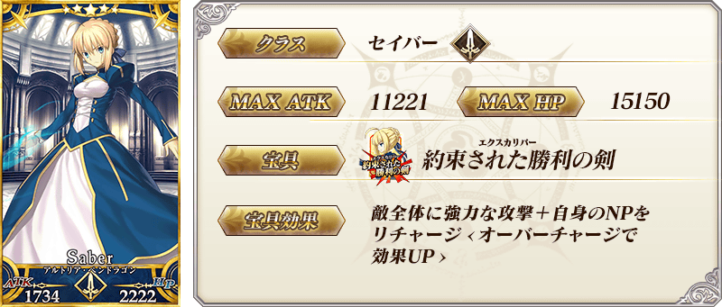
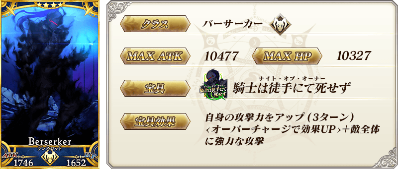
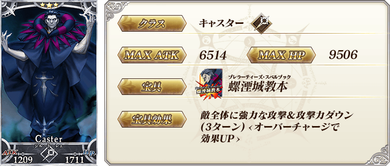
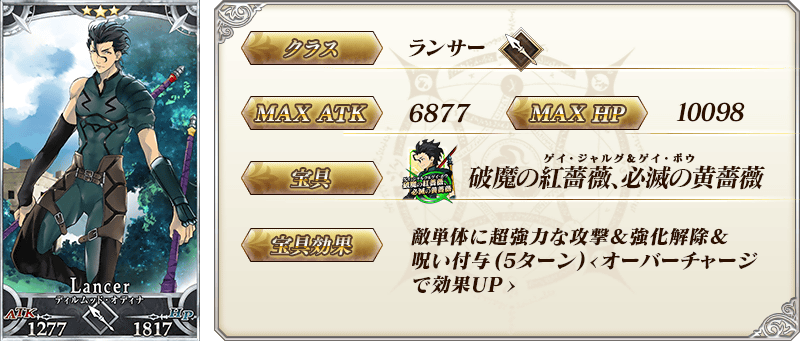
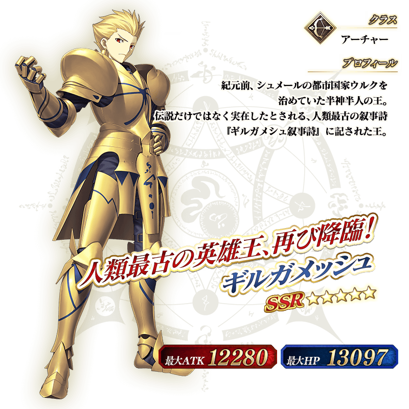
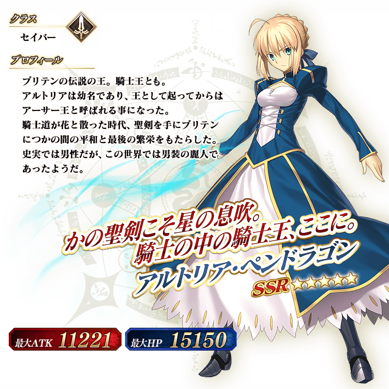

紀念Fate/Zero×Fate/Grand Order特別活動「Fate/Accel Zero Order」的舉辦，舉辦開幕前7大宣傳活動！
◆舉辦期間◆
2016年4月21日(四）16:00～4月27日（三）AM8:5913:59
記念Fate/Accel Zero Order的舉辦，在Fate/Zero活躍的Servant「吉爾伽美什」與「阿爾托莉亞・潘德拉剛」的戰鬥動作及寶具演出翻新！
◆翻新時間◆
2016年4月21日(四）16:00～

配合戰鬥動作及寶具演出的翻新，追加吉爾伽美什的幕間物語！
◆追加時間◆
2016年4月21日(四）16:00～
以Fate/Zero中的阿爾托莉亞・潘德拉剛的服裝身姿為形象，新魔術禮裝「Royal Brand」登場！
獲得魔術禮裝的關卡在迦爾帝亞之門以期間限定出現！
裝備新獲得的魔術禮裝，能使用新的Master技能。
◆舉辦期間◆
2016年4月21日(四）16:00～4月27日（三）AM8:5913:59
紀念Fate/Accel Zero Order開幕前宣傳活動，曜日關卡「宝物庫の扉を開け」的舉辦日翻新！ 目前的週日外再加上週二、週四、週六也追加新關卡。
◆翻新時間◆
2016年4月21日(四）16:00～
※曜日別關卡的詳細如下。
曜日別關卡一覧
| 曜日 | 關卡名 | 做為戰利品獲得的主要道具 | 攻略推薦職階 |
|---|---|---|---|
| 月 | 弓の修練場 | Archer的靈基再臨道具、Archer的技能強化素材道具 |  |
| 種火集め <槍・殺編> |
Lancer、Assassin、Berserker的經驗值卡 |   |
|
| 火 | 新追加 宝物庫の扉を開け AP1/2
|
QP |  |
| 槍の修練場 | Lancer的靈基再臨道具、Lancer的技能強化素材道具 | |
|
| 種火集め <剣・騎編> |
Saber、Rider、Berserker的經驗值卡 |   |
|
| 水 | 狂の修練場 | Berserker的靈基再臨道具、Berserker的技能強化素材道具 | ALL |
| 種火集め <弓・術編> |
Archer、Caster、Berserker的經驗值卡 | |
|
| 木 | 新追加 宝物庫の扉を開け AP1/2
|
QP | |
| 騎の修練場 | Rider的靈基再臨道具、Rider的技能強化素材道具 | |
|
| 種火集め <槍・殺編> |
Lancer、Assassin、Berserker的經驗值卡 | |
|
| 金 | 術の修練場 | Caster的靈基再臨道具、Caster的技能強化素材道具 | |
| 種火集め <剣・騎編> |
Saber、Rider、Berserker的經驗值卡 | |
|
| 土 | 新追加 宝物庫の扉を開け AP1/2
|
QP | |
| 殺の修練場 | Assassin的靈基再臨道具、Assassin的技能強化素材道具 | |
|
| 種火集め <弓・術編> |
Archer、Caster、Berserker的經驗值卡 | |
|
| 日 | 宝物庫の扉を開け
AP1/2
|
QP | |
| 剣の修練場 | Saber的靈基再臨道具、Saber的技能強化素材道具 | |
|
| 種火集め <ランダム編> |
Saber、Archer、Lancer、Rider、Caster、Assassin、Berserker的經驗值卡（隨機） | – |
在迦爾帝亞之門內隨曜日出現的「宝物庫の扉を開け 初級、中級、上級、超級」全部的AP消費量，以期間限定變成1/2。「宝物庫の扉を開け」能獲得大量QP做為戰利品。
◆舉辦期間◆
2016年4月21日(四）16:00～4月27日（三）AM8:5913:59
◆對象關卡◆
宝物庫の扉を開け 初級、中級、上級、超級
【宝物庫の扉を開け 關卡的難易度等】
| 難易度 | 推薦Lv | 消費AP | 通過報酬 |
|---|---|---|---|
| 初級 | 10 | 10→5 | マナプリズムｘ1 |
| 中級 | 25 | 20→10 | マナプリズムｘ2 |
| 上級 | 40 | 30→15 | マナプリズムｘ3 |
| 超級 | 60 | 40→20 | マナプリズムｘ4 |
進行Servant及概念禮裝的強化時，大成功(經驗值2倍加成)・極大成功(經驗值3倍加成)發生的機率以期間限定變為2倍。
無論如何藉此機會強化喜愛的Servant及概念禮裝吧！
◆舉辦期間◆
2016年4月21日(四）16:00～4月27日（三）AM8:5913:59
在2016年4月20日(三)Niconico生放送播送特別節目「迦爾帝亞放送局 Vol.2 Fate/Zero特別活動紀念放送」進行的節目聯動宣傳活動的報酬贈送！
※特別節目及聯動宣傳活動已結束。
詳情請在特設頁面確認。
【對象】
4月20日(三)節目結束（21:29）前有遊玩「Fate/Grand Order」的所有玩家

【對應内容】
友情點數24,000pt
黄金の果実4個
呼符1枚
聖晶石12個
【配布方法】
在禮物箱配布
【配布期間】
2016年4月22日(五)AM3:00～2016年9月30日(五)23:59
「Fate/Accel Zero Order」的活動關卡，會將對活動攻略有利的效果給予特定的Servant！
强化對象的Servant，挑戰活動吧！
【對象Servant】
阿爾托莉亞・潘德拉剛、吉爾伽美什、迪爾姆德・奧德利暗、蘭斯洛特、吉爾・德・雷〔Caster〕、子吉爾、亞歷山大、諸葛孔明〔埃爾梅羅II世〕、咒腕的哈桑、吉爾・德・雷〔Saber〕
◆「Fate/Accel Zero Order開幕前宣傳活動Pick Up召喚」期間◆
期間：2016年4月21日(四）16:00～4月27日（三）AM8:5913:59
以期間限定舉辦「Fate/Accel Zero Order開幕前宣傳活動Pick Up召喚」！
從在Fate/Zero登場的Servant中，期間限定Servant「★5(SSR)吉爾伽美什」與「★5(SSR)阿爾托莉亞・潘德拉剛」以每日交替Pick Up！
還有，「★4(SR)蘭斯洛特」「★3(R)吉爾・德・雷〔Caster〕」「★3(R)迪爾姆德・奧德利暗」也Pick Up。
詳情請在聖晶石召喚畫面左下的召喚詳細確認。
在Pick Up期間中，Pick Up Servant的出現機率提升！
10次召喚★4(SR)以上1枚確定和★3(R)以上的Servant1位確定！
※★4(SR)以上確定包含Servant和概念禮裝。
※所謂「出現機率UP」意指比同稀有度的Servant及概念禮裝出現機率更高的設定。
| Pick Up日 | 每日交替Pick Up的Servant |
|---|---|
| 4月21日(四)16:00～22:59 | 吉爾伽美什、阿爾托莉亞・潘德拉剛 |
| 4月21日(四)23:00～4月22日(五)22:59 | 吉爾伽美什 |
| 4月22日(五)23:00～4月23日(六)22:59 | 阿爾托莉亞・潘德拉剛 |
| 4月23日(六)23:00～4月24日(日)22:59 | 吉爾伽美什 |
| 4月24日(日)23:00～4月25日(一)22:59 | 阿爾托莉亞・潘德拉剛 |
| 4月25日(一)23:00～4月26日(二)22:59 | 吉爾伽美什 |
| 4月26日(二)23:00～4月27日(三) |
吉爾伽美什、阿爾托莉亞・潘德拉剛 |
※請注意每日交替Pick Up的Servant會變更。
※關於蘭斯洛特、吉爾・德・雷〔Caster〕、迪爾姆德・奧德利暗，在此Pick Up期間中，為常駐Pick Up的對象。
※Pick Up期間中，吉爾・德・雷〔Caster〕就算在第一特異點通過前也能入手。
※關於其他的Servant・概念禮裝，請在聖晶石召喚畫面左下的「召喚詳細」確認。






